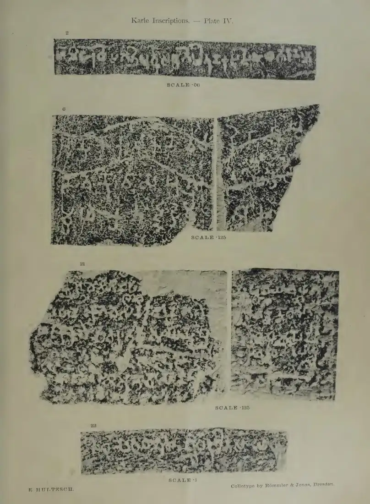
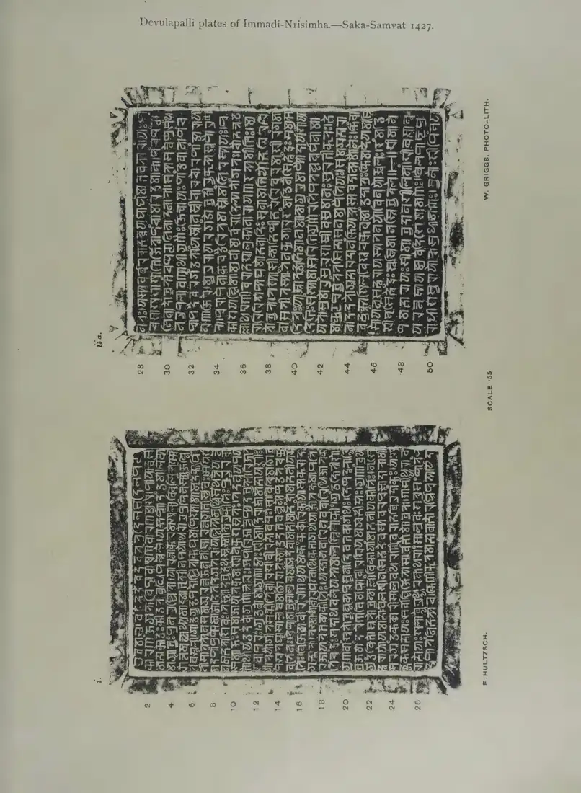
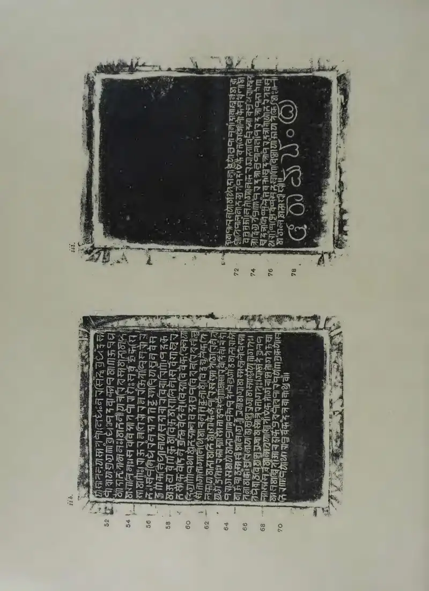

Dēvulapalli plates of Immaḍi-Nṛisimha ; Śaka-Saṅvat 1427
DEVULAPALLI PLATES OF IMMADI-NRISIMHA;
SAKA-SAMVAT 1427.
SAKA-SAMVAT 1427.
By J. RAMAYYA, B.A., B.L.
As noticed in Mr. Sewell’s Lists of Antiquities, Vol. I. p. 134, these plates are preserved at Dévulapalli in the Vâyalpâdu tâluka of the Cuddapah district. At my request Mr. A. Krishna-svami Nayudu, B.A., Acting Tahsildar of Vâyalpâdu, obtained a loan of the original plates and forwarded them to Dr. Hultzsch, who has kindly furnished me with a set of ink-impressions, from which I edit the inscription.
Dr. Hultzsch has supplied the following information regarding the original plates:—“Three copper-plates with rounded tops; 11” in height and about 6½” in breadth; strung on a ring which is not soldered and which measures 4” in diameter and ½” in thickness. On the ring is soldere a rectangular seal which measures 1½” by 1” and bears, in relief on a countersunk surface, a standing boar which faces the proper left. In front of the boar is a dagger, and above the boar the sun and a crescent.”
Plate 1 is bound after this page.
The language of the inscription is Sanskrit poetry, with the exception of a few words in Sanskrit prose in lines 1 and 77 f., and the alphabet is Nâgarî of the Vijayanagara type.1 The very last word, śrī-Rāmachaṅndra (l. 78), which stands for the signature, is in Telugu characters.
The inscription records that Immađi-Nṛisimha (ll. 39 and 46 f.), son of Nṛisimharâya (ll. 22 f. and 46), granted to a Brâhmaṇa the village of Dêvulapalli (l. 67 f.) in the Mârjavâđa-siman2 (l. 65) of the Penugoṇđa-mahârâjya3 (l. 64). Dêvulapalli, which is identical with the modern village of that name in the Vâyalpâđu tâluka of the Cuddapah district, is said, in the inscription, to have been situated within the limits of the village of Guṇđlûru4 (l. 65), south-east of Sûrinâyani-Mushṭûru (l. 66), and north of Ađavi-Mushṭûru (l. 67). Mr. Krishnasvami Nayudu informs me that Sûrinâyani-Mushṭûru is now called Errakôṭapalli in the public accounts, while popularly it is known as Mushṭûru without any prefix, and that Ađavi-Mushṭûru is now known as Kôna, though it is sometimes called also Kôna-Mushṭûru. He also tells me that Dêvulapalli is no longer an agrahâra.
The plates have been borrowed from Dêvulapalli Veñkaṭaramaṇappa, who is said to be a lineal descendant of the donee. It is said that the original name of the family was Vyâlapâti,5 that it was given up in favour of Bollapini, which, in course of time, became corrupted into Gollapini, and that finally the family adopted the name of Dêvulapalli, which is the name of the village where it is living to this day.
The occasion for the grant was a lunar eclipse which occurred on Sunday, the full-moon tithi of Bhâdrapada in the cyclic year Raktâkshin and Śaka-Sainvat 1427 (in numerical words) (v. 32 f.). This date corresponds to Sunday, the 25th August A.D. 1504, on which day there was a lunar eclipse.6
Historically the inscription is of great value, as it relates to a line of chiefs who exercised considerable authority on the east coast of Southern India in the 15th century of the Christian era, and one of whom, the donor's father Nṛisimharâya, was the principal actor in the drama which involved the overthrow of the first dynasty of the Karṇâṭa or Vijayanagara empire. Little or nothing has been hitherto published concerning these chiefs, whom I would call Sâluva7 chiefs. I have compiled the following genealogy from the information furnished by this inscription and by the Telugu poems Jaimini-Bhâratam and Varâhapurânam. The former book was dedicated to Immađi-Nṛisimha's father Nṛisimharâya, also called Narasiṅgarâya,8 and the latter to Nṛisimharâya's general Narasimha of the Tulù family, who afterwards became the founder of one of the dynasties of the Vijayanagara empire. The Jaimini-Bhâratam has been printed, and my references are to the Madras edition of 1893. The Varâhapurânam has not been printed, but manuscript copies of it are extant. I quote from a copy made for me from the manuscript available in
1 [It deserves to be noted that the rare letter jha occurs in l. 50; that the aspiration of pha is expressed by a hook at the top of the line (ll. 4, 5 and 75); and that the virâma after t (ll. 17, 25, 30, 34, 38 and 75) and n (ll. 26, 29, 31, 44 and 70) is added to the right of the letter.—E. H.]
2 [Regarding this district, the head-quarters of which was Vallûru near Cuddapah, see South-Ind. Inscr. Vol. III. p. 106, and above, Vol. V. p. 206.—E. H.]
3 [The province (râjya) of Penugoṇđa or Penugoṇđe is mentioned above, Vol. III. No. 34 (vv. 19 and 32), and Vol. VI. p. 327 and note 2.—E. H.]
4 According to Mr. Sewell's Lists of Antiquities, Vol. I. p. 134, this is a village 13 miles north-north-east of Vâyalpâđu.
5 [This is evidently the same as Vêlapâtipura (the modern Vâyalpâđu), which was the residence of the donee's great-great-grandfather according to l. 49 of these plates.—E. H.]
6 According to Prof. Kielhorn it was "a total eclipse of the moon, visible in India, from 13 h. 43 m. to 17 h. 13 m. after mean sunrise."
7 The title Sâluva occurs in ll. 14, 15, 24 and 26 of these plates.
8 He is styled Narasinga or Narasimha indiscriminately, but I prefer to call him Nṛisimharâya as in the inscription, in order to distinguish him easily from his general Narasimha.
the Government Library of Oriental Manuscripts, Madras.1 The Varáhapuráṇam gives the names of only those persons who are in the direct line of descent, and the names of the collaterals are taken from the Jaimini-Bháratam and the inscription. The Sâluva family traces its descent from Yadu and is hence called Yādava-vainśa. The earliest historical person mentioned is Vainkidēva, who is referred to in the Varáhapuráṇam only. Vainki's son was Guṇda.2 Guṇda had six sons,3 of whom Maṅgu or Sâluva-Maṅgu4 was the greatest. The Jaimini-Bháratam is very eloquent in its praises of this person and says that, among other things, he gained success for Sâmparâya in his battles with the "Sulṭân of the South" and thereby earned the title of "the establisher of Sâmparâya," that he founded (the temple of) the god Śrīraṅga and gave sixty thousand máðas (half-pagodas) for the expenses of the temple, and that he killed (in battle) the "Sulṭân of Madhurâ."5
In the temple at Simháchalam in the Vizagapatam district there is an inscription dated in the Śaka year 1350. It records that Teluṅgurâya, son of Samburâya of Kannađa-dēśa, delivered into the possession of two shepherds one hundred cows for the maintenance of two perpetual lights (akhanda-dípa) in the temple, and that he gave the shepherds a puṭṭi of land in the village Vađđadi in lieu of wages. There is another inscription of Teluṅgurâya, also dated in the Śaka year 1350, at Santarâvûru in the Bâpaṭla tâluka of the Kistna district, in which the king is described as the "Mahímaṇdalésvara Misaragaṇđa Kaṭhâri Sâluva Teluṅgurâya."6 Rao Bahadur K. Viresalingam Pantulugaru quotes a verse of the poet Śrīnátha (who lived about this time), in which the poet laments the death of several of his patrons including Teluṅgurâya;7 and there is another verse which is attributed to the same poet and which ends in the words Sâmparâyani Teluṅgá níku dírgh-áyuv=aun: "O Teluṅga, (son) of Sâmparâya! May you be blessed with long life!" There seems no doubt that the king or prince Teluṅgu mentioned in the above-quoted inscriptions was one and the same, and if his father Sâmparâya alias Samburâya is identical with the Sâmparâya of the Jaimini-Bháratam, he would appear to have belonged to the same Sâluva family as Maṅgu—apparently to a senior branch of it. It would appear also that the sovereignty, which was originally in the senior branch of the family, subsequently passed on to the junior branch to which Maṅgu belonged, though we do not know at present how and when this change took place. The "Sulṭân of the South" who was at war with Sâmparâya was, no doubt, the Bahmani king, and by the "Sulṭân of Madhurâ" we should, I think, understand the Pâṇdya king,8 the temple of Śrīraṅgam which Maṅgu built is evidently the celebrated temple in Śrīraṅgapaṭṭana in the Mysore country.
Maṅgu had six sons, of whom one was Gauta,9 who had four sons: Guṇda,10 Sâluva, Boppa and Tippa. The Jaimini-Bháratam devotes a couple of verses to the eulogy of Tippa,11 who appears to have been a great warrior, and to whom are applied the birudas of Misaragaṇđa, Kaṭhâri, Sâluva and Pañchaghaṇṭânináda—titles which are ascribed to Nṛisimharâya in the subjoined inscription (vv. 13 and 16). An inscription at Têkal in the Mysore territory makes mention of a certain Gôparâja, son of Sâluva-Tipparâja-Ođeyar, to whom the village of
1 The author of the Varáhapuráṇam gives the genealogy of his patron Narasimha, which tallies with the published genealogy of that family, and he also gives the genealogy of Narasimha's master Sâluva-Nṛisimharâya.
2 See v. 6 of the Dêvulapalli plates.
3 See v. 7 f. of the same plates.
4 He is called Sâluva-Maṅgi in vv. 8 and 9 of the same plates.
5 Jaimini-Bháratam, p. 4.
6 Mr. Sewell's Lists of Antiquities, Vcl. I. p. 84.
7 Livres of Telugu Poets (edition of 1895), Part I. p. 114.
8 [This reference may as well be to one of the Musalmân rules of Madhurâ, on whom see above, Vol VI. p. 324 and note 6.—E. H.]
9 See v. 10 of the Dêvulapalli plates.
10 See v. 11 of the same plates.
11 [A certain Gôpa-Tippa-nṛipati is mentioned in an undated Grantha inscription at Śendalai (No. 56 of 1897), and an inscription of Goppa-Tippa-mahīpati at Râmésvaram appears to be dated in Śaka-Saṅvat 1390 Burgess and Natesa Sastri's Tamil and Sanskrit Inscriptions, p. 59, No. 11, where I wculd correct नळखाहये (which the translator calls "very bad Sanskrit" because he does not understand it) into नळखाहये, i.e. 1390).—E. H.]
Têkal was given under the orders of Dêvarâya-mahârâya of Vijayanagara. Gôparâja is called a Mahâmandalêsvara and the “setter-up of Ganga Hale Sambâ Râya.”1 The copy of the inscription from which the translation was made appears to have been so imperfect that no safe conclusions can be drawn from it. But a thorough examination of this inscription seems likely to throw some light on the history of the Sâluva chiefs. Tippa's eldest brother Gunđa had, by his wife Mallâmbâ, two sons: Timma2 and Nřisimharâya,3 and Nřisimharâya had, by his wife Šrírangamâmbâ,4 a son named Immađi-Nřisimha or Nřisimha II.
From all accounts Nřisimharâya appears to have been a very powerful prince. Both according to Ferishta and the author of the Burhán-i Ma'ásir he was the most powerful prince in all Karnâta and Telingâna and owned extensive territories on the east coast right up to Masulipatam. According to the latter authority Nřisimharâya was constantly at war with the Bahmani king Muhâmmad II. They met first at Râjamahêndri, “on the further side of which the infidel Narasimharâya with 700,000 cursed infantry and 500 elephants like mountains of iron had taken his stand.”5 No battle took place, however, as Nřisimharâya is said to have taken to flight on the arrival of the Sultân's army. This was probably in the year 1479 A.D. Next year they seem to have met again at Koñđaviđu, the people of which, “throwing themselves on the protection of Narasimharâya, had altogether withdrawn from their allegiance to the rule of Islâm.” After quelling this rebellion, the Sultân marched against the kingdom of Nřisimharâya, because “the destruction of the infidels was an object much to be desired: and as the infidel Narasimha who, owing to his numerous army and the extent of his dominions, was the greatest and most powerful of all the rulers of Telingâna and Vijayanagar, had latterly shown delay and remissness in proving his sincerity towards the royal court by sending presents and nal-bahâ (money given to foreign troops to abstain from plunder and devastation).”6 The Sultân laid siege to the fort of Mâlûr (in the Mysore territory), “the greatest of the forts of that country,” and was ultimately bought off with valuable presents of jewellery and other valuables, elephants and horses, and with a confession by Nřisimharâya of his weakness and a promise of obedience and submission. This did not, however, prevent the Sultân from straightway marching against Kâñchî, “situated in the centre of the dominions of that malignant one” (Nřisimharâya), and sacking the town and temples “which were the wonder of the age.”
We shall now turn to the Hindû accounts of the same period. The Jaimini-Bhâratam gives Nřisimharâya credit for having vanquished the kings of the Tigula7 (or Tamiî) and Ođđi (or Orissa) countries and for having conquered the forts of Kapâladurga, Penugoñđa,8 Bonagiri, Cheñji, and Kommadhârâpura.9 In another part of the Jaimini-Bhâratam we are told that Nřisimharâya “decorated the golden palaces (temples?) of Kâñchî, Veňkata (Tirupati) and Kâlahasti with the precious stones annually given as tribute by the kings of Pâñchâla, Draviđa, Aïnga, Mâlava, Šaka and Prâgjyôtisha.”10 This is, of course, hyperbolical, but shows that the three important places of pilgrimage referred to were in the dominions of Nřisimharâya.
1 Mr. Rice's Mysore Inscriptions, p. 208.
2 [The Raïnganâtha temple at Šrírangam contains a Sanskrît and Tamiî inscription (No. 59 of 1892), dated in Šaka-Sarîvat 1385, Subhânu, of Sâluva-Gôpa-Timma-nřipati, who is also called the Mahâmandalêsvara Mêdini-mîsaraganđa Kattâri Sâluva Dharanivarâha. Sâluvasâluva Tirumalaidêva-mahârâja. Another inscription of the same king at Tanjore, dated in Šaka-Sarîvat 1377, Yuvan, has been published in South-Ind. Inscr. Vol. II. No. 23; and a third one at Tirukkâttuppalli (No. 55 of 1897) is dated in the Vikrama year (i.e. Šaka-Sarîvat 1382).— E. H.]
3 See v. 12 of the Dêvulapalli plates.
4 See v. 21 of the same plates.
5 Ind. Ant. Vol. XXVIII. p. 288.
6 Loc. cit. p. 289.
7 Tigula is a Kanarese name for Tamiî; see Dr. Kittel's Kannada-English Dictionary, s.r.
8 Jaimini-Bhâratam, p. 5.
9 Jaimini-Bhâratam, p. 95. Bonagiri is apparently the well-known town of that name in the Hyderabad territory. Cheñji is Gingee in the South Arcot district. I am unable to identify Kcmmadhârâpura.
Jaimini-Bhâratam, p. 115.
According to the Vardhapurânam Nrìsimharâya's first general Îsvara of the Tułu family conquered the forts of (1) Udayâdri, (2) Huttari, (3) Gandikôta, (4) Penugonda, (5) Beggulûrm, (6) Kôvela-Nellûru, (7) Kundâni, (8) Gođuguchinta, (9) Bâgûru, (10) Naragonda, (11) Âmûru and (12) Šrîraṅgapaṭtapam, and "destroyed the cavalry of the Yavanas of Beđandakôta at Gandikôta."1 The Yavanas referred to here are the Bahmanî kings, who transferred their capital from Kulbarga to Bidar in June 1423 A.D., during the reign of Ahmad Shâh.2 Referring to the same event, the author of the Telugu poem Pârijâtâpaharanam says that Îsvara "gave rise to thousands of rivers of blood by killing the horses of the Yavanas of Beđandakôta,"3 but he transfers the scene to Kandukûru.4 The Muhammadan historians do not, of course, refer to this event.
Nrìsimharâya's dominions were extensive, and they probably comprised the whole of the modern districts of North Arcot, Chingleput and Nellore, and portions at least of South Arcot, Cuddapah, Kistna and Mysore. The Varâhapurânam calls Nrìsimharâya "the possessor of arms which are capable of protecting the kingdom of Karnâta,"5 which shows his connection with that kingdom. According to the same work he was one of the Sâmantas or tributary princes of the Karnâta empire, and both Îsvara and his son Narasimha were his generals one after the other. It would appear also that Nrìsimharâya was probably related to the kings of the first dynasty of the Karnâta empire, since both claimed to belong to the Yâdava line of the lunar race of Kshatriyas. This description closely tallies with that given by the Portuguese chronicler Fernão Nuniz of "Narsymgua" who overthrew the first dynasty of the empire. In fact according to Nuniz there was a double usurpation of the Vijayanagara throne about this time, the first usurpation being by "Narsymgua," whom I identify with Sâluva Nrìsimharâya, father of Immađi-Nrìsimha, the donor of the present grant, and the second by Nrìsimharâya's general "Narsenaque" or Narasimha, the founder of the Tułuva dynasty.
According to Nuniz, the following are briefly the circumstances that led to the downfall of the first and the accession of the second dynasty. The last great king of the first dynasty was Dêvarâya II., who ruled till about the year A.D. 1449. The next forty or fifty years saw no less than five sovereigns, all of them weak and imbecile. The last of them, whom Nuniz calls "Padea Rao," seems to have been the worst of the lot, and in his time the empire declined even more than in the time of his four immediate predecessors. It occurred to Nrìsimharâya, who was the principal minister and general of the state, that a change of sovereign was necessary to prevent the kingdom from falling an easy prey to its hereditary enemy, the Bahmanî king, and, with the consent and support of the other generals and ministers, he seized the throne and kingdom, allowing the king to make his escape. Nrìsimharâya died, leaving two infant sons and a general named "Narsenaque" or Narasa-Nâyaka, in whom he had much confidence and whom he therefore appointed regent during the minority of his sons. In a short time Nrìsimharâya's eldest son was murdered by one of Narasa-Nâyaka's enemies, who wanted it to be believed that Narasa-Nâyaka murdered the boy for the sake of his crown. Subsequently the second prince was murdered at the instance of Narasa-Nâyaka himself, who thereupon
1 Verses 42 and 43 of the first dêvâsa. I am not able to identify Nos. 6, 7, 8 and 9. Huttari (2) is probably Puttûr in the Kârvêtinagar Estate, and Beggulûru (5) is perhaps Bangalcre. No. 10 may be Naragallu (kallu means 'a rock' and konda a 'hill') in the Chittûr tâluka, where there is an cld fcrt (see the North Arcot District Manual, new edition, Vol. II. p. 349), and Âmûru (11) is evidently Gid-Âmûru or Ambûrudurga in the Guđiyâtam tâluka. The other places are well-known.
2 Ind. Ant. Vol. XXVIII. p. 210. Beđandakôta or Beđadakôta is 'the fort of Beđada,' which is a corruption of Bidar.
3 Vaijayanti Press edition of 1895, p. 10.
4 The words Kandukûru and Gandikôta suit the metre equally well, and one of the readings is necessarily incorrect.
5 Verse 30 of the first dêvâsa.
proclaimed himself king. Narasa-Nâyaka was succeeded by his son “Busbal Rao,” who died after a reign of six years and was succeeded by his younger brother Kṛishnadêvarâya.1
Nuniz expressly states that Narasa-Nâyaka was the father of Kṛishnadêvarâya and that “Busbal Rao” was his eldest son and successor. Narasa-Nâyaka must therefore be identified with Narasimha, the founder of the second dynasty, and “Busbal Rao” with his eldest son Vira-Narasimha.2 Mr. Sewell finds this account confusing and conflicting with known facts.3 This is because he identifies “Narsymgua,” the first usurper, with Narasimha, the founder of the Tułuva dynasty, which leads him to the conclusions that his successor Narasa-Nâyaka, whom he identifies with Vira-Narasimha, was not his son, and that between Vira-Narasimha and Kṛishnadêvarâya there was an intermediate king—conclusions which are certainly opposed to express statements contained in several inscriptions and books.
These difficulties would vanish entirely if we admit the theory of double usurpation and identify Narasa-Nâyaka with the founder of the Tułuva dynasty. The theory of double usurpation is not only not inconsistent with known facts, but is highly probable, since but for the first usurpation Narasimha would have had no locus standi in the affairs of the empire and certainly no opportunities or excuse for usurping the throne. The statement in the inscription that Nṛisimharâya with the aid of his sword defeated all and became a Sârvabhauma or emperor (v. 13) seems to me to point unmistakably to his usurpation of the Karpâṭa throne.
The account of Nuniz as to the nature of the relationship which existed between Sâluva-Nṛisimharâya and Narasimha is directly and fully corroborated by the Varâhapurânam. The first chapter (âsâdsa) of the book gives the genealogy of both these persons and says that Narasimha's father Îsvara, who is also called Îsvara-Nâyaka, was Nṛisimharâya's general, and that he was succeeded by his son in that office. In another place Narasimha is said to have been honoured by Nṛisimharâya and appointed commander of his forces,4 and in a third place he is described as the “supporter of the kingdom of Nṛisimharâya.”5 In the penultimate verse of the sixth âsâdsa he is addressed as Sâluva-Narasinga-dharâdhara-daṇdanâtha, i.e. 'commander of the forces of king Sâluva-Nṛisimharâya.'
There are at present no means of fixing the exact year in which Nṛisimharâya usurped the Vijayanagara throne; but this event must be placed between the Šaka year 1408 (= A.D. 1486-87), which is the latest known date of the first dynasty,6 and the Šaka year 1418, Râkshasa (= A.D. 1495-96), which is the earliest known reliable date of Immađi-Nṛisimharâya.7 That the latter was recognised as king of Vijayanagara, at least in name, is expressly stated by Nuniz, and Dr. Hultzsch informs me that an inscription at Bârukûr (No. 166 of 1901) of Šaka-Samvat 1421, Siddhârthin (= A.D. 1499-1500), states that in this year the Mahâmandalêsvara Mêdinimîsaragaṇda Kathâri Sâluva Immađi-Narasimharâya-mahârâya was ruling at
1 A Forgotten Empire, pp. 305-315.
2 I confess I cannot derive “Busbal Rao” from Vira-Narasimha, but there is no doubt about the identity of the persons.— [Perhaps the name is connected with Bhujabala, a surname of the Hoysalas.—E.H.]
3 A Forgotten Empire, p. 308, note 2.
4 Verse 35 of the first âsâdsa.
5 The penultimate verse of the second âsâdsa.
6 A Forgotten Empire, pp. 96 and 404.
7 South-Ind. Inscr. Vol. I. p. 131, No. 115. Inscriptions Nos. 116 and 119 of the same volume appertain to the reign of Immađi-Nṛisimha's father Nṛisimharâya. Dr. Hultzsch's suggestion that these two donors were kings of Vijayanagara is clearly untenable. The donors style themselves Mahâmandalêsvara, and their family name Sâluva is also given. There was no Narasimha on the throne of Vijayanagara in Šaka 1395 and 1404, which are the dates of the inscriptions Nos. 116 and 119.—[An inscription at Vallam near Wandiwash (No. 75 of 1900), dated in Šaka-Samvat 1391, Virôdhin, belongs to the time of the Mahâmandalêsvara Mêdinimîsaragaṇda Kathâri Sâluvasâluva Narasingaiyadêva, and the same chief is mentioned in an Âmbûr inscription of the Vijayanagara king Râjasêkhara, son of Mallikârjûna, dated in Šaka-Samvat 1390, Sarvadhârin (No. 4 of 1896). Bukka, an ancestor of the third Vijayanagara dynasty, is said to have “firmly established even the kingdom of Sâluva-Nṛisimha” (above, Vol. III. p. 238), whence it may be concluded that he was the minister of Nṛisimharâya. Kṛishnarâya had a minister named Sâluva-Timma; see above, Vol. VI. pp. 109 and 231.—E.H.]
Vijayanagara,1 and that his chief minister was Narasa[n]ṇa-Nāyaka.2 This Narasaṇṇa-Nāyaka may be identical with the founder of the Tuļuva dynasty and the “ Narsanaque ” of Nuniz. If this identification is correct, Narasinīha's usurpation of the throne of Nrīsimharāya, or rather of his son and successor Immađi-Nrīsimharāya, cannot have taken place earlier than A.D. 1499-1500.3
Mr. Sewell quotes five inscriptions of “ Narasinīharāya of Vijayanagara ” appertaining to years prior to A.D. 1500.4 One of these inscriptions was dated in 1451, one in 1469, and one in 1471. It is clear that these three inscriptions cannot be referred to the founder of the Tuļuva dynasty, as they came into existence long before he could have become king of Vijayanagara according to any account. The last of the five inscriptions belongs to Sāļuva Immađi-Nrīsimha,5 son of Nrīsimharāya. The remaining inscription is to be found at Conjeeveram, and it is possible that, when examined, it will be found to belong to the time of Sāļuva-Nrīsimharāya.
As Dr. Hultzsch informs me, a Bārukūr inscription (No. 152 of 1901) of the Mahārájá-dhirája Rájaparaméśvara Virapratāpa Vira-Narasinīharāya of Vijayanagara is dated in Śaka-Saṅvat 1424, Durmati (= A.D. 1501-02). This date suggests that Immađi-Nrīsimharāya was ousted by Narasinīha (or by his son Vira-Narasinīha ?) between A.D. 1499 and 1502. In accordance with this fact the subjoined copper-plate inscription of A.D. 1504 does not represent him any more as a king of Vijayanagara, but as the ruler of the province of Penugonđa.
TEXT.6
First Plate.
- 1 शुभमस्तु । वंदेहं देवदेवं तं तुंदिलं [प्र]दिलंपटं ।
- 2 कारणं जगतां विघ्नवारणं वारणं7 मुखे । [१*] पायाद्व[:*] स
- 3 महाक्रीडः कीडतंबुधिपल्लवेले8 । 9 यद्[द्वा]दंडम[त]लंब्य10
- 4 मग्ना भूः पुनरुष्टियता11 । [२*] या रत्नाकरमेखल[त]विवक्तितप्रफा-12
- 5 रोत्नम[न्म]ध्यमा क्षाभृत्पीनपयोधरोरुपुलिनस्फूर्जन्नि-
- 6 तंबस्थली । गाढं गूढपदोष्टियता13 कयमपि श्यामा मृदेकार्थि-
- 7 नी सातत्येन समग्ररत्नजननी सा रत्नगर्भास्तु वः । [३*] अस्ति श्रो-
- 8 मदपां पुष्पमामोदितदिगंतरं । यन्नित्यं मूर्ध्नि संधत्ते यत्ने-
- 9 न महता शिवः । [8*] 14तस्मादभूदुधस्तस्मात्पुरुकीर्तिः पुरुरवा[:]
- 10 । समाजः समजायंत 15क्रमश्रीनेकशस्ततः । [५*] तद[न्व]यप[यों]-
1 In v. 22 of the present inscription this city is alluded to by the statement that Immađi-Nrīsimha “ ascended the throne existing on Hēmakúṭa.” This is the local and traditional name of the hill which adjoins the temple of Virūpākshasvāmin, the principal deity in the city of Vijayanagara and the patron god of the kings of that empire.
2 The same two persons are mentioned in an inscription of Śaka-Saṅvat 1418, Nala (= A.D. 1496-97), at Hañche in the Mysore tāluka (Ep. Carn. Vol. III., My. 33), where however Immađi-Narasinīharāya is called simply Narasinīharāya.
3 Mr. Sewell places it between A.D. 1487 and 1490 (A Forgotten Empire, p. 98) and elsewhere in A.D. 1498 (ibid. p. 110).
4 Lists of Antiquities, Vol. II. pp. 62-64.
5 Mr. Sewell's Lists of Antiquities, Vol. I. p. 116.
6 The transcript has been prepared by Dr. Hultzsch from ink-impressions.
7 Read वारणं.
8 Read क्रीडन्नंबुधिपल्लवेले.
9 Read यद्दृष्टा°.
10 Read लंब्य.
11 Read रुत्पिता.
12 Read स्फारीन्नम°.
13 Read दोत्पिता.
14 Read भूदुध°.
15 Read क्रमशी°.
11 मोधौ 1युंडदेवो गुणोत्तरः । 2अपारिजात्तेष्युदभूत्पारिजात
12 इवापरः । [६*] गुडबोमो3 गुणाढ्यः श्रीमादिराजो महायशी4 ।
13 गौतयौ5 गीतसत्कीर्ति[वी]रश्रीवीरहोबलः । [७*] सावित्रिमंगिभू-
14 पश्च तथा 6सालुवमंगिरा[ट् ।*] तस्मादुदभवन्नन्ये षडते7 चक्र-
15 वर्तिनः । [८*] तेषामभूत्साकुव[मंगि]देवो महीमहेंदो8 महनीयकी-
16 तिः । विजित्य वीरं रणधुर्यमेकं कठारिकां योस्य कराद-
17 गृह्णात् । [९*] 9तस्मान्मोनोरथ इवाधिकभागधेयाज्ञौतत्त्वमापति-
18 रजायत भव्यकीर्तिः । यद्दानवारिनववारिधिजातकी-
19 तिंचंद्रः सदा धवक्त्यत्यमलस्त्रिलोकीं । [१०*] गुंडचितोशो
20 गुणवांस्ततोभून्नव्यप्रसूनादिव भव्यगंधः । 10दिषद्दला[ब्धिं]
21 भुजमंदरेण विमथ्य वीरश्रियमग्रहीद्यः । [११*] गुणांबुधे-
22 गुंडविभोस्ततोभून्मल्लांविकायां11 महनीयकीर्तिः । नृसि-12
23 ह्वरायोयमहोवक्त्सीनृसिह्वदेवस्य13 वरप्रसादा[त्] । [१२*] मी-
24 सरगंडकठारीसाकुवधरणीवराहविरुदांकः । यः ख-
25 14ङ्गकसहायः सर्वान्निर्जित्य सार्वभौमोभूत् । [१३*] 15आसोश्चराव-
26 राहो यः खलाब्धेरुश्चरन्16 धरां । साकुवः शत्रुसंघातं प-
27 त्त्विघातं निहत्य च । [१४*] किणीकृतमहाबाहोरर्त्यिप्रत्यर्थिदा-17
Second Plate; First Side.
28 नतः । यस्य बर्बरवाहत्वं18 यथार्थमभवत्परं । [१५*] यः पं-
29 19चसाखशाखाभिर्जित्वा पंचामरदुमान् । पंचघंटा-
30 निनादोभूत्पंचघटानिनादनात्20 । [१६*] सत्यसत्वेषुसंध[ा]-21
31 नरूपलावखधीगुणैः [।*] जित्वा यः पांडवान् पंच
32 प्रापदैवरगंडतां । [१७*] यस्त्रीनस्त्री चारचीरपांड्यराया-
33 व्रणाजिरे । मूरुरायरगंडोभूज्ञीरूकृत्य स्वपौरुष[ा]-
34 त् । [१८*] 22प्ररापेनाकवर्डैरितमस्तोमं निरस्य यः । प्र-
35 काशयन्निमामुवीमुर्वरादित्यतां23 गतः । [१९*] चौहृत्त[म]-
36 स्वा24 धरणीवराहश्चाळुक्यनारायण
| 1 Read गुंडं°. | • 2 Read °जातीषु°. |
| 4 Read °यशाः. | 5 Read गौतयो. |
| 7 Read षडेते. | 8 Read °महेंद्री. |
| 10 Read द्विष°. | 11 Read °बिकायां. |
| 13 Read °हीबलश्रीनृसिंह°. | 14 Read खड्गेक°. |
| 16 Read °रुद्धरन्. | 17 Read °प्रत्यर्थि°. |
| 19 Read °शाख°. | 20 Read °घंटा°. |
| 22 Read प्रतापेनार्कवहैरि°. | 23 Read °मुर्वांमु°. |
इत्यमीभिः । मु-
- १ Read गुंडबोमी.
- १ Read साळुव°.
- १ Read तस्मान्मनी°.
- १२ Read नृसिंह°.
- १५ Read आसौद्धरा°.
- १८ Read °बाह्लं.
- २१ Read °सत्त्वेषु°.
- २४ Read °स्त्री.
37 रारिरित्यप्यथ मोहनादिः स्वनामभिर्यो हरिर[र्थ]-
38 तोभूत् । [२०*] 1तश्यासीन्महिषी हरेरिव रम[ा*] श्रीरंगमां-
39 बा सती तस्यां तेन कुमार इंमडिनसिह्वेदः2 समुत्प[ा]-
40 दितः । य(१)स्तादृञ्चहिमानमात्मगुरुमय्यौदार्यशौय[र्ी]-
41 दिभिः संख्यामत्सरिभिर्गुणैरतिपतन्नन्वर्थनामा-
42 यते । [२१*] सुमेरं सुरशासीव3 सुमनःसुरभोक्ततः । हे-
43 मकूटप्रभूतं 4तत्सिहासनमुपैति यः । [२२*] समग्रहारा-
44 न् ददतोग्रहारदानं कियद्यस्य वदान्यमौळेः । किं वा
45 बहूक्त्याखिलविश्वचक्रब्रह्म[ा*]डदातुः किमदेयमस्ति
46 । [२३*] सोयं 5नृसह्ररायस्य तनयो विनयोज्वलः6 । इंमडि-
47 श्रीनृसिह्वेदः7 स्वस्तिमानस्ति भूतले ॥ [२४*] — ॥ श्रीमाने-
48 ष महारायः सीमा भूदानशीलिनां । श्रीवत्सान्व-
49 यरत्नस्य 8य[जु]वेर्दिशिखामणेः ॥ [२५*] वेलपा[टि]पु-
50 राधीशसूरायोभसुधीमणेः । सूनोः श्रीपिंनया-
Second Plate ; Second Side.
51 र्यस्य तनयस्य तपोनिधेः [*] 9नरसिंहबुधेद्रस्य
52 पौत्राय सुगुणांबुधेः । [२६*] पदवाक्यप्रमाणजप्रथ-10
53 मोदाहृतात्मनः । महनीयचरित्रस्य महामहि-
54 मशालिनः । [२७*] 11सवविद्यातपोराशेः सर्वज्ञैकशि-
55 खामणेः । राजरत्नशिरोरत्नरंजितांप्तिसरोरु-
56 हः । [२८*] संपनिधिरंनदातभट्टस्य प्रियसूनवे [*] स-
57 द्गुणैकनिधानाय सदाचारविचारिणे । [२९*] पदक्र-
58 मजटावर्णक्रमविक्रमशालिने । सर्वशास्त्रर-
59 हस्यैकवेदिने 12बुंह्यवेदिने । [३०*] विद्याविवेकविनया-
60 दिगुणौघधाम्ने हृद्यानवद्यसुपवित्रचरित्रसीम्न13
61 । सौभाग्यभाग्यनिधिमाचनभट्टनाम्ने विद्दत्कुलैकति-
62 लकाय महामहिम्ने । [३१*] शाकेन्द्रे परिसंख्याते गिरिनेत्र-
63 युगेंदुभिः । रक्ताच्याख्ये भाद्रपदपौर्णमास्यां रवेर्दिने । [३२*] चंदो-14
1 Read तस्या°.
2 Read °वृसिंहेंद्रः.
3 Read °शाखौव.
4 Read तत्सिंहा°.
5 Read वृसिंह°.
6 Read °योज्ज्वलः.
7 Read °वृसिंहेंद्रः.
8 Read यजुर्वेदि°.
9 Read °सिंह°.
10 Read °णञ°.
11 Read सर्व°.
12 Read ब्रह्म°.
13 Read °सौम्ने.
14 Read चंद्री°.
Plate 2 is bound after this page.
Plate 3 is bound after this page.
64 परागसमये महापुष्पफलप्रदे । पेनुगोडमहाराज्ये
65 मार्जवाडस्य सोमनि । [३३*] गुंडलूरुनामग्रामस्य स्थले विख्या-
66 तनामकं । सूरिनायनिमुष्टूरुग्रामस्याग्नेयभागतः । [३४*]
67 तथैवाडविमुष्टूरुग्रामस्योत्तरभागतः । यामं देवुलप-
68 ल्याख्य1 सर्वमान्यतया स्थितं । [३५*] एक्कभोगं चाष्टभोगतेज[:*]स्वा-
69 म्यसमन्वितं । आचंद्रार्कं पुत्रपौत्रपारंपर्येण भुक्तये । [३६*] स-
70 हिरण्यपयोधारापूर्वकं दत्तवान् ध्रुवं ॥ [३७*]
Third Plate.
71 2दामपालनयोर्मध्ये 3दानाच्छेयोनुपालनं । दानात्स्वर्नमवा-4
72 प्रोति पालनादच्युतं पदं । [३८*] एकैव भगि[नी] लोके सर्वेषामे-
73 व भूभुजां । न भोग्या न करग्राह्या विप्रदत्ता वसुंधरा । [३९*]
स्वद-
74 त्ता[द*]द्विगुतं5 पुण्यं परदत्तानुपालनं । परदत्तापहारेण
75 स्व[द]त्तां6 निष्फलं भवत्7 । [४०*] स्वदत्तां परदत्तां वा यो
हरेत वसुं-
76 धरां । 8षष्टिर्वर्षसहस्राणि विष्ठायां जायते किमिः9 ॥ [४१*] — ॥
77 मंगरुमहाश्रीश्री ॥
78 श्रीरामचंद्र10 [॥*]
ABRIDGED TRANSLATION.
The first three verses are in praise of Vighnêśvara, the boar-incarnation of Vishṇu, and the goddess of the Earth.
(Verse 4 f.) From that glorious flower of the waters (the Moon), which perfumes (illumines) the whole space, (and) which Śiva always wears on (his) head with great solicitude, was produced Budha, (and) from him the renowned Purûravas. Several kings were afterwards born (in that family) in course of time.
(V. 6.) In the milk-ocean of this family was born the virtuous king Guṇḍa (I.), like a second Pārijāta (tree), though (he became) an Apārijāta11 (by conquering his enemies).
(V. 7 f.) To him were born the virtuous Guṇḍa (II.)-Bomma, the glorious Mādirāja of great fame, Gautaya (I.) whose high fame was sung (by all), the heroic and glorious Virahô-bala, prince Sāvitri-Maṅgi, and king Sālūva-Maṅgi— (like) a second set of six emperors.
(V. 9.) Most famous of these was king Sālūva-Maṅgi, a Mahêndra on earth, who vanquished a hero foremost in battle and seized the dagger (kaṭhārikā) from his hand.12
1 Read °ल्लाख्यं.
2 Read दान°.
3 Read दानाच्छेयो°.
4 Read °त्स्वर्गम°.
5 Read °गुणं.
6 Read स्वदृशं.
7 Read भवेत्.
8 Read षष्टिं वर्षं°.
9 Read क्रिमिः.
10 In large Telugu characters.
11 This compound has to be dissolved into apa + ari + jāta.
12 This incident probably accounts for the title Kaṭhāri assumed by Maṅgi and his descendants.
(V. 10.) To him was born the renowned king Gauta (II.), the unblemished moon of whose fame, born in the fresh ocean (created by) the waters (poured out on the occasion of his) gifts, always whitened the three worlds.
(V. 11.) To him was born, even as delicious fragrance out of a fresh blossom, the virtuous king Guṇda (III.), who won the goddess of victory by churning the ocean of (his) enemies' forces with the Mandara (mountain) of (his) arm.
(V. 12-20.) By the grace of the god Nṛisimha of Ahôbala,1 this lord Guṇda (III.), the ocean of good qualities, begot on (his wife) Mallāmbikā Nṛisimharāya of great fame, who possessed the titles of Misaragaṇda, Kathāri, Sāluva (i.e. 'the hawk') and Dharanivarāha; who, aided only by (his) sword, defeated all (his enemies) and became an emperor (Sārvabhauma);2 who became Dharāvarāha (i.e. 'the boar of the earth') by saving (uplifting) the earth from the ocean of wicked (kings), and Sāluva by smiting the crowd of (his) enemies like (a flight of) birds;3 whose title Barbarabāha became full of meaning, because his powerful arm (hand) had become rough through the killing of enemies and the making of gifts to the needy;4 who by conquering (excelling in making gifts) the five divine trees with the fingers of (his) hand (and) ringing the bell five times (in celebration of the five-fold victory) became Pañchaghaṇânināda;5 who obtained the title of Aivaragaṇda by conquering (excelling) the five Pâṇdavas in truthfulness, strength, archery, personal beauty and intelligence (respectively);6 who, wielding the weapon, became Mûrurāyaragaṇda7 by making through his valour the three kings of Châra, Chôra8 and Pâṇdya afraid on the battle-field; who obtained the title Urvarâditya by dispelling the thick darkness— (his) enemies by the sunshine of (his) valour (and thereby) illuminating this earth; (and) who was Hari (Vishṇu) in reality by virtue of his titles Chauhattamalla,9 Dharanivarāha, Châlukya-Nârâyaṇa10 and Môhana-Murâri.
(V. 21 f.) His queen was the virtuous Śriraṅgamâmbâ, even as Ramâ of Hari. By her was born to him prince Immađi-Nṛisimhêndra, who, by excelling even his father, who was so noble, in generosity, valour and other innumerable good qualities, made his name literally true,11 (and) who, praised by learned men, ascended his (viz. his father's) throne, which rose on the Hêmakûṭa (mountain), even as the divine tree, perfumed with flowers, (adorns) Mount Mêru, which abounds in golden peaks (hêma-kûṭa).
(V. 23.) What are gifts of agrahâras to this chief of beneficiaries, who gave complete neck-laces (samagra-hâra)? What is the use of many words? What is there that could not be made a gift of by the donor of a full viśvachakra and brahmâṇda?12
(V. 24.) This well-bred, glorious Immađi-Nṛisimhêndra, son of Nṛisimharāya, is prosperous on earth.
1 This is the celebrated place of pilgrimage in the Kurnool district.
2 This is an evident reference to Nṛisimharāya's usurpation of Vijayanagara.
3 The tradition is that the title was due to the fact of Nṛisimharāya's ancestors having acted as fowlers to the kings of Karnâta.
4 There is a pun in the original on the word dâna, which means 'cutting' and also 'a gift.'
5 This etymology is fanciful. Pañchaghaṇâninâda is apparently the same as Pañchamahâtiabda.
6 Another graceful etymology. The meaning of Aivaragaṇda is 'the lord of five (chiefs),' a title which Nṛisimharāya seems to have borrowed from the Vijayanagara kings.
7 This title also was borrowed from the Vijayanagara kings.
8 Châra stands for Chêra, and Chôra for Chôlâ.
9 In this sense the word is a corruption of chatur-hasta-malla. Another derivation is from chatur-hasti-malla, which means 'a hero having the strength of four elephants.'
10 This is an anachronism.
11 Here is a play on the word immađi, which means 'the second' as well as 'double.'
12 [These are the names of two of the sixteen great gifts (mahâdâna); see Ep. Ind. Vol. I. p. 368 and note 53. — E. H.]
(V.v. 25-37.) This glorious Maháráya, who is the type of habitual givers of land, on the auspicious occasion of an eclipse of the moon, on Sunday, the full-moon tithi of Bhádrapada in (the year) called Raktákshin (corresponding to) the Šáka year reckoned by the mountains (7) the eyes (2), the Yugas (4), and the moon (1),— (i.e. 1427)— granted with libations of water, as a sarvamánya and ékabhóga, with the eight rights of ownership, the village of Dêvulapalli, south-east of the village Sûrináyani-Mushtûru and north of the village Ađavi-Mushtûru, within the limits of the village of Gunđlûru in the símna of Márjaváda in the mahárájya of Penugonđa, to Máchanabhatta, who was the son of Annadátabhatta, grandson of Narasimha, great-grandson of Pinnayârya, and great-great-grandson of Sûrâyójha of Vêlapâtipura,1 a Yajurvédin of the Šrívatsa gôtra.
V.v. 38-41 are imprecatory verses.
1 This is evidently the modern village of Váyalpádu.


